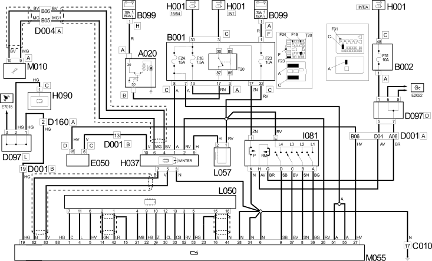

E7050 AUTOMATIC TRANSMISSION WIRING DIAGRAM
- Path
- Electrical equipment > 1 ELECTRICAL FUNCTIONS > E70 VEHICLE ELECTRONIC SYSTEMS > E7050 AUTOMATIC TRANSMISSION > E7050 AUTOMATIC TRANSMISSION WIRING DIAGRAM
- Kind
- topic
- Applies to
- engines: 2.8 JTD 8V; all production periods
- Interactive page
- https://sloeber94.github.io/elrnDB-fDct/en/#/244002036
Applies to: engines: 2.8 JTD 8V; all production periods
Wiring Diagram

Components
Component code | Description | Reference to the assembly |
|---|---|---|
STARTER MOTOR | 5520B | |
JUNCTION UNIT | 5,505A | |
JUNCTION UNIT UNDER DASHBOARD | - | |
MAXI FUSE BOX ON BATTERY | - | |
LEFT FRONT EARTH | - | |
FRONT/DASHBOARD COUPLING | - | |
FRONT/ENGINE COUPLING | - | |
ADDITIONAL FRONT/DASHBOARD COUPLING | - | |
SHORT CIRCUITING COUPLING | - | |
FRONT/ABS COUPLING | - | |
IGNITION SWITCH | ||
GEAR CONTROLS | - | |
SWITCH CONTROL PANEL | ||
INSTRUMENT PANEL | 5560B | |
AUTOMATIC TRANSMISSION SOLENOID VALVES | - | |
Ignition switch electro-magnet | - | |
ENGINE MANAGEMENT ECU | - | |
- |
Topics linked from this page (20)
- 5505A MULTI-FUNCTION COMPONENTS
- 5520A IGNITION SWITCH
- A020 STARTER MOTOR
- B001 JUNCTION UNIT
- B002 JUNCTION UNIT UNDER DASHBOARD
- B099 MAXI FUSE BOX ON BATTERY
- C010 LEFT FRONT EARTH
- D001 FRONT/DASHBOARD COUPLING
- D004 FRONT/ENGINE COUPLING
- D018 ADDITIONAL FRONT/DASHBOARD COUPLING
- D097 SHORT CIRCUITING COUPLING
- D186 FRONT/ABS COUPLING
- E050 INSTRUMENT PANEL
- H001 IGNITION SWITCH
- H037 GEAR CONTROLS
- H090 SWITCH CONTROL PANEL
- L050 AUTOMATIC TRANSMISSION SOLENOID VALVES
- L057 Ignition switch electro-magnet
- M010 ENGINE MANAGEMENT ECU
- M030 ALARM CONTROL UNIT